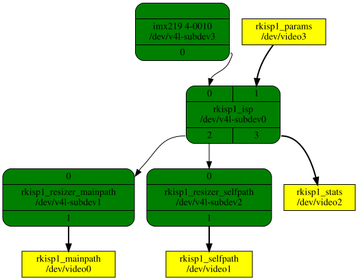

7.16. Rockchip Image Signal Processor (rkisp1)¶
7.16.1. Introduction¶
This file documents the driver for the Rockchip ISP1 that is part of RK3288 and RK3399 SoCs. The driver is located under drivers/media/platform/rockchip/ rkisp1 and uses the Media-Controller API.
7.16.2. Revisions¶
There exist multiple smaller revisions to this ISP that got introduced in
later SoCs. Revisions can be found in the enum rkisp1_cif_isp_version
in the UAPI and the revision of the ISP inside the running SoC can be read
in the field hw_revision of struct media_device_info as returned by
ioctl MEDIA_IOC_DEVICE_INFO.
Versions in use are:
RKISP1_V10: used at least in rk3288 and rk3399
RKISP1_V11: declared in the original vendor code, but not used
RKISP1_V12: used at least in rk3326 and px30
RKISP1_V13: used at least in rk1808
7.16.3. Topology¶

The driver has 4 video devices:
rkisp1_mainpath: capture device for retrieving images, usually in higher resolution.
rkisp1_selfpath: capture device for retrieving images.
rkisp1_stats: a metadata capture device that sends statistics.
rkisp1_params: a metadata output device that receives parameters configurations from userspace.
The driver has 3 subdevices:
rkisp1_resizer_mainpath: used to resize and downsample frames for the mainpath capture device.
rkisp1_resizer_selfpath: used to resize and downsample frames for the selfpath capture device.
rkisp1_isp: is connected to the sensor and is responsible for all the isp operations.
7.16.3.1. rkisp1_mainpath, rkisp1_selfpath - Frames Capture Video Nodes¶
Those are the mainpath and selfpath capture devices to capture frames.
Those entities are the DMA engines that write the frames to memory.
The selfpath video device can capture YUV/RGB formats. Its input is YUV encoded
stream and it is able to convert it to RGB. The selfpath is not able to
capture bayer formats.
The mainpath can capture both bayer and YUV formats but it is not able to
capture RGB formats.
Both capture videos support
the V4L2_CAP_IO_MC capability.
7.16.3.2. rkisp1_resizer_mainpath, rkisp1_resizer_selfpath - Resizers Subdevices Nodes¶
Those are resizer entities for the mainpath and the selfpath. Those entities can scale the frames up and down and also change the YUV sampling (for example YUV4:2:2 -> YUV4:2:0). They also have cropping capability on the sink pad. The resizers entities can only operate on YUV:4:2:2 format (MEDIA_BUS_FMT_YUYV8_2X8). The mainpath capture device supports capturing video in bayer formats. In that case the resizer of the mainpath is set to ‘bypass’ mode - it just forward the frame without operating on it.
7.16.3.3. rkisp1_isp - Image Signal Processing Subdevice Node¶
This is the isp entity. It is connected to the sensor on sink pad 0 and receives the frames using the CSI-2 protocol. It is responsible of configuring the CSI-2 protocol. It has a cropping capability on sink pad 0 that is connected to the sensor and on source pad 2 connected to the resizer entities. Cropping on sink pad 0 defines the image region from the sensor. Cropping on source pad 2 defines the region for the Image Stabilizer (IS).
7.16.3.4. rkisp1_stats - Statistics Video Node¶
The statistics video node outputs the 3A (auto focus, auto exposure and auto
white balance) statistics, and also histogram statistics for the frames that
are being processed by the rkisp1 to userspace applications.
Using these data, applications can implement algorithms and re-parameterize
the driver through the rkisp_params node to improve image quality during a
video stream.
The buffer format is defined by struct rkisp1_stat_buffer, and
userspace should set
V4L2_META_FMT_RK_ISP1_STAT_3A as the
dataformat.
7.16.3.5. rkisp1_params - Parameters Video Node¶
The rkisp1_params video node receives a set of parameters from userspace to be applied to the hardware during a video stream, allowing userspace to dynamically modify values such as black level, cross talk corrections and others.
The ISP driver supports two different parameters configuration methods, the fixed parameters format or the extensible parameters format.
When using the fixed parameters method the buffer format is defined by struct
rkisp1_params_cfg, and userspace should set
V4L2_META_FMT_RK_ISP1_PARAMS as the
dataformat.
When using the extensible parameters method the buffer format is defined by
struct rkisp1_ext_params_cfg, and userspace should set
V4L2_META_FMT_RK_ISP1_EXT_PARAMS as
the dataformat.
7.16.4. Capturing Video Frames Example¶
In the following example, the sensor connected to pad 0 of ‘rkisp1_isp’ is imx219.
The following commands can be used to capture video from the selfpath video node with dimension 900x800 planar format YUV 4:2:2. It uses all cropping capabilities possible, (see explanation right below)
# set the links
"media-ctl" "-d" "platform:rkisp1" "-r"
"media-ctl" "-d" "platform:rkisp1" "-l" "'imx219 4-0010':0 -> 'rkisp1_isp':0 [1]"
"media-ctl" "-d" "platform:rkisp1" "-l" "'rkisp1_isp':2 -> 'rkisp1_resizer_selfpath':0 [1]"
"media-ctl" "-d" "platform:rkisp1" "-l" "'rkisp1_isp':2 -> 'rkisp1_resizer_mainpath':0 [0]"
# set format for imx219 4-0010:0
"media-ctl" "-d" "platform:rkisp1" "--set-v4l2" '"imx219 4-0010":0 [fmt:SRGGB10_1X10/1640x1232]'
# set format for rkisp1_isp pads:
"media-ctl" "-d" "platform:rkisp1" "--set-v4l2" '"rkisp1_isp":0 [fmt:SRGGB10_1X10/1640x1232 crop: (0,0)/1600x1200]'
"media-ctl" "-d" "platform:rkisp1" "--set-v4l2" '"rkisp1_isp":2 [fmt:YUYV8_2X8/1600x1200 crop: (0,0)/1500x1100]'
# set format for rkisp1_resizer_selfpath pads:
"media-ctl" "-d" "platform:rkisp1" "--set-v4l2" '"rkisp1_resizer_selfpath":0 [fmt:YUYV8_2X8/1500x1100 crop: (300,400)/1400x1000]'
"media-ctl" "-d" "platform:rkisp1" "--set-v4l2" '"rkisp1_resizer_selfpath":1 [fmt:YUYV8_2X8/900x800]'
# set format for rkisp1_selfpath:
"v4l2-ctl" "-z" "platform:rkisp1" "-d" "rkisp1_selfpath" "-v" "width=900,height=800,"
"v4l2-ctl" "-z" "platform:rkisp1" "-d" "rkisp1_selfpath" "-v" "pixelformat=422P"
# start streaming:
v4l2-ctl "-z" "platform:rkisp1" "-d" "rkisp1_selfpath" "--stream-mmap" "--stream-count" "10"
In the above example the sensor is configured to bayer format: SRGGB10_1X10/1640x1232. The rkisp1_isp:0 pad should be configured to the same mbus format and dimensions as the sensor, otherwise streaming will fail with ‘EPIPE’ error. So it is also configured to SRGGB10_1X10/1640x1232. In addition, the rkisp1_isp:0 pad is configured to cropping (0,0)/1600x1200.
The cropping dimensions are automatically propagated to be the format of the isp source pad rkisp1_isp:2. Another cropping operation is configured on the isp source pad: (0,0)/1500x1100.
The resizer’s sink pad rkisp1_resizer_selfpath should be configured to format YUYV8_2X8/1500x1100 in order to match the format on the other side of the link. In addition a cropping (300,400)/1400x1000 is configured on it.
The source pad of the resizer, rkisp1_resizer_selfpath:1 is configured to format YUYV8_2X8/900x800. That means that the resizer first crop a window of (300,400)/1400x100 from the received frame and then scales this window to dimension 900x800.
Note that the above example does not uses the stats-params control loop. Therefore the capture frames will not go through the 3A algorithms and probably won’t have a good quality, and can even look dark and greenish.
7.16.5. Configuring Quantization¶
The driver supports limited and full range quantization on YUV formats,
where limited is the default.
To switch between one or the other, userspace should use the Colorspace
Conversion API (CSC) for subdevices on source pad 2 of the
isp (rkisp1_isp:2). The quantization configured on this pad is the
quantization of the captured video frames on the mainpath and selfpath
video nodes.
Note that the resizer and capture entities will always report
V4L2_QUANTIZATION_DEFAULT even if the quantization is configured to full
range on rkisp1_isp:2. So in order to get the configured quantization,
application should get it from pad rkisp1_isp:2.